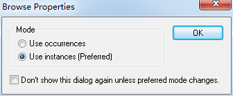
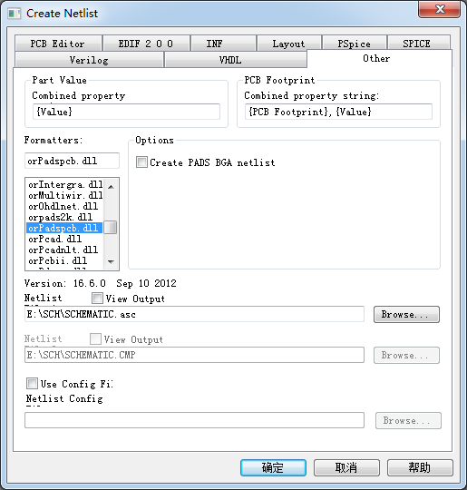
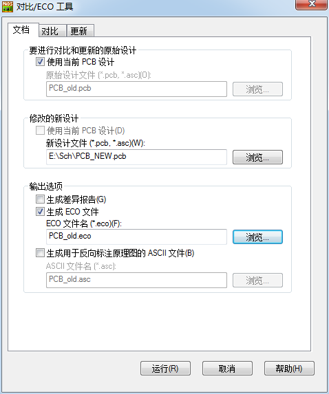
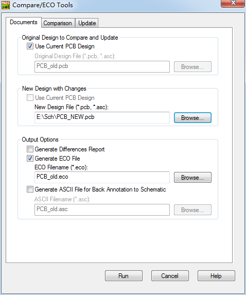
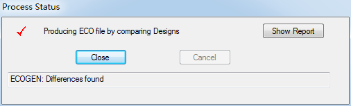

20160317
OrCAD to PADS Layout
1. OrCAD修改元件 PCB Footprint 属性
在项目管理窗口中选中要修改的项目文件
执行 Edit / Browse / Parts /
弹出 Browse Properties 窗口
(默认选择 Use instances (Preferred))

点击OK
出现 BROWSE Parts窗口
选中所有元件
执行 Edit / Properties
弹出 Browse Spreadsheet窗口
找到 PCB Footprint 属性，并将其修改为PADS Layout的PCB封装名
点击OK
2. OrCAD导出网表
在项目管理窗口中选中要导出的项目文件
执行 Tools / Create Netlist
弹出Create Netlist 窗口
切换到 Other选项卡

Part Value
Combined property :
{Value}
PCB Footprint
Combined property string :
{PCB Footprint},{Value}
在Formatters列表框中选择 orPadspcb.dll or orpads2k
勾选 View Output
点击确定
生成.asc网表文件
3. PADS Layout导入.asc网表文件
File / Import
OrCAD原理图更新到PADS的方法
在ORCAD中对电路原理图进行Modify，通常需要Update相应的PCB Layout
将OrCAD中所做的更改输出到已有的PADS Layout布线中，该项操作即为正向注释
具体方法:
原理图文件 Schematic_OLD.DSN，及对应的PCB文件 PCB_OLD.pcb
1.在OrCAD中打开原理图文件 Schematic_OLD.DSN，将修改后的原理图命名为 Schematic_NEW.DSN，
并输出PADS格式的网表 Schematic_NEW.asc文件。
2.在PADS中新建一个设计，执行 File / Import 导入 Schematic_NEW.asc，保存此PCB文件为 PCB_NEW.pcb ---- 如果"修改的新设计"里选的 Schematic_NEW.asc 文件,那这一步可以省略
3.在PCB Layout中打开 PCB_OLD.pcb，执行 Tools / Compare/ECO... 弹出比对/ECO窗口


在 要进行对比和更新的原始设计(Original Design to Compare and Update)
勾选 使用当前PCB设计(Use Current PCB Design)
意思是把当前文件(PCB_OLD.pcb)做为原始的比对文件
修改的新设计(New Design With Changes)
新设计文件(New Design File) 浏览选择 PCB_NEW.pcb or Schematic_NEW.asc
输出选项Output Options
勾选 生成ECO文件 Generate ECO file
设置好ECO文件的路径
eco文件默认保存在PADS的安装目录(D:\ED\PADS\PADSProjects)下
点击RUN,生成ECO文件

4.重新打开原有的PCB_OLD.pcb文件，File / Import 选择 PCB_old.eco 导入
重复利用已Layout好的PCB的CPU部分
有Project_A.DSN和Project_B.DSN,及对应的PCB Project_A.pcb和Project_B.pcb
CPU相同，项目A的PCB Project_A.pcb已Layout好,Project_B.pcb Layout要求利用Project_A.pcb CPU部分
1. 将原理图删除至只留下CPU相同部分,命名为CPU.DSN,导出网表为CPU.asc
2. 打开 Project_A.pcb,执行 Tools / Compare/ECO... 弹出比对/ECO窗口
在"修改的新设计"里选择 CPU.asc 文件,生成 CPU.eco 文件
3. 打开 Project_A.pcb,File / Import 选择 CPU.eco 导入,
这样就生成了只有CPU并且已经Layout好的PCB文件,删除无用的铜皮、板框,保存为 CPU.PCB
4. 打开CPU.PCB,执行 Tools / Compare/ECO... 弹出比对/ECO窗口
在"修改的新设计"里选择 Project_B.pcb 文件,生成 Project_B.eco 文件
5. 打开CPU.PCB,File / Import 选择 Project_B.eco 导入
6. 选中新加的元件/右键/打散(Disperse)
利用PADS自带的转换工具将OrCAD原理图转换为PADS Logic
开始 / MentorGraphics SDD / PADS9.5 / Translators / PADS Schematic Translator